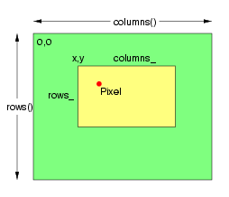

GraphicsMagick
GraphicsMagick
GraphicsMagick
GraphicsMagick
The Pixels class provides efficient access to raw image pixels. Image pixels (of type PixelPacket) may be accessed directly via the Image Pixel Cache. The image pixel cache is a rectangular window (a view) into the actual image pixels (which may be in memory, memory-mapped from a disk file, or entirely on disk). Obtain existing image pixels via get(). Create a new pixel region using set().
Depending on the capabilities of the operating system, and the relationship of the window to the image, the pixel cache may be a copy of the pixels in the selected window, or it may be the actual image pixels. In any case calling sync() insures that the base image is updated with the contents of the modified pixel cache. The method decode()supports copying foreign pixel data formats into the pixel cache according to the QuantumTypes. The method encode() supports copying the pixels in the cache to a foreign pixel representation according to the format specified by QuantumTypes.
Setting a view using the Pixels class does not cause the number of references to the underlying image to be reduced to one. Therefore, in order to ensure that only the current generation of the image is modified, the Image's modifyImage() method should be invoked to reduce the reference count on the underlying image to one. If this is not done, then it is possible for a previous generation of the image to be modified due to the use of reference counting when copying or constructing an Image.
The PixelPacket* returned by the set and get methods, and the IndexPacket* returned by the indexes method point to pixel data managed by the Pixels class. The Pixels class is responsible for releasing resources associated with the pixel view. This means that the pointer should never be passed to delete() or free().
The pixel view is a small image in which the pixels may be accessed, addressed, and updated, as shown in the following example, which produces an image similar to the one on the right (minus lines and text):
// Create base image
Image image(Geometry(254,218), "white");
// Set the image type to TrueColor DirectClass representation.
image.type(TrueColorType);
// Ensure that there is only one reference to underlying image
// If this is not done, then image pixels will not be modified.
image.modifyImage();
// Allocate pixel view
Pixels view(image);
// Set all pixels in region anchored at 38x36, with size 160x230 to green.
unsigned int columns = 196; unsigned int rows = 162;
Color green("green");
PixelPacket *pixels = view.get(38,36,columns,rows);
for ( int row = 0; row < rows ; ++row )
for ( int column = 0; column < columns ; ++column )
*pixels++=green;
// Save changes to image.
view.sync();
// Set all pixels in region anchored at 86x72, with size 108x67 to yellow.
columns = 108; rows = 67;
Color yellow("yellow");
pixels = view.get(86,72,columns,rows);
for ( int row = 0; row < rows ; ++row )
for ( int column = 0; column < columns ; ++column )
*pixels++=yellow;
view.sync();
// Set pixel at position 108,94 to red
*(view.get(108,94,1,1)) = Color("red");
// Save changes to image.
view.sync();
The following is the definition of the Magick::Pixels class:
class Pixels
{
public:
// Construct pixel view using specified image.
Pixels( Magick::Image &image_ );
// Destroy pixel view
~Pixels( void );
// Transfer pixels from the image to the pixel view as defined by
// the specified region. Modified pixels may be subsequently
// transferred back to the image via sync.
PixelPacket* get ( const int x_, const int y_,
const unsigned int columns_,const unsigned int rows_ );
// Transfer read-only pixels from the image to the pixel view as
// defined by the specified region.
const PixelPacket* getConst ( const int x_, const int y_,
const unsigned int columns_,
const unsigned int rows_ );
// Transfers the image view pixels to the image.
void sync ( void );
// Allocate a pixel view region to store image pixels as defined
// by the region rectangle. This area is subsequently transferred
// from the pixel view to the image via sync.
PixelPacket* set ( const int x_, const int y_,
const unsigned int columns_, const unsigned int rows_ );
// Return pixel colormap index array
IndexPacket* indexes ( void );
// Left ordinate of view
int x ( void ) const;
// Top ordinate of view
int y ( void ) const;
// Width of view
unsigned int columns ( void ) const;
// Height of view
unsigned int rows ( void ) const;
};
Copyright © Bob Friesenhahn 1999 - 2020